Case File
- Pages — ~40 (estimated from manuscript word count — confirm or edit)
- Genre — Literary Fiction · Historical Fantasy · War & Military Fiction (suggested — confirm or edit)
Empress Chandralekha dies in her twenty-eighth winter, and her husband, Emperor Dharmasena, kneels at her grave for seventeen consecutive nights until something red and green pushes up through the frost. The gardener who finds it calls it a miracle. The Cultivators, who left the bulb there themselves, call it Item 0188, Mythic Class, and wait to see what a grieving empire does with an excuse to believe in undying love.
What it does is grow an economy. A trader who gives his name as Somadatta distributes the bulbs from a seed-stall that is really a Cultivator field post, and within a generation the flower once called Chandralekha's Vow — now Anantavrata, the Endless Vow — has become a wedding custom no family can afford to skip and no farmer can quite afford to refuse. Barley fields along the Shonavati turn to flowers one holding at a time; a bride gives up the cat that has slept against her ankles since childhood because a vow-flower needs the room a cat's dish would take; a court physician tests the bloom with a frame of temple bees and finds, to his quiet horror, that nothing living will go near it.
The reckoning arrives as arithmetic, not omen: fewer fields of grain each year, a war fought over granaries already stripped bare, and rats nesting where the barley used to stand. By the time anyone adds up what the undying flower cost the ordinary, mortal people who grew it, the empress it was named for has been dead for decades — and the debt has already been filed away as a miracle. The songs, as ever, never mention the cats.
Principal Subjects

Dharmasena
The emperor who knelt at his wife's grave for seventeen nights, and left an empire an excuse to believe in undying love.

Chandralekha
Dead before the story proper begins, and the reason for everything that follows — a woman turned, without her consent, into a national myth.

Somadatta
The field agent who sells grief back to the grieving, one bulb at a time, and keeps seven secret cats because someone has to.

The Eternal-Grief Lily
A single, undying, unpollinated flower — Item 0188 — that no insect will touch and no family can resist.

Kamalini
A nineteen-year-old bride who receives a vow-flower as a wedding gift, and gives up the cat who slept at her ankles to make room for it.

Dhumra
The cat given up for a flower — the one cost of the Vow small enough for the histories to leave out entirely.
Additional Case Records
6 additional subjects documented
Records
-
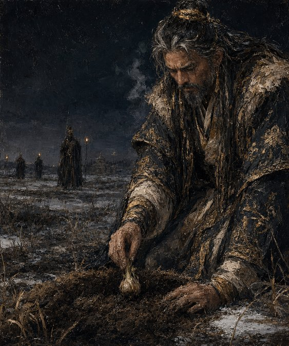
On the fourth night, Dharmasena presses a single bulb into his wife's grave and tells no one why.
-
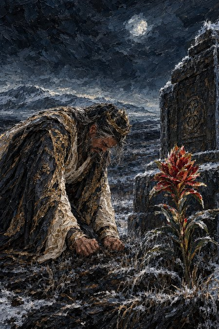
By the seventeenth visit, the Emperor's composure finally fails him.
-
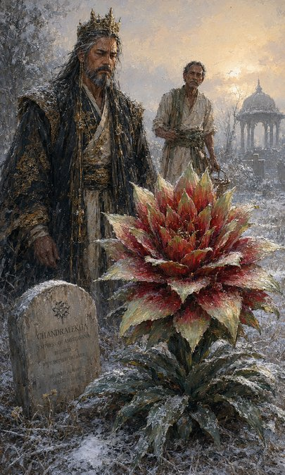
Asked whether the flower should be removed, Dharmasena says only: let it stand.
-
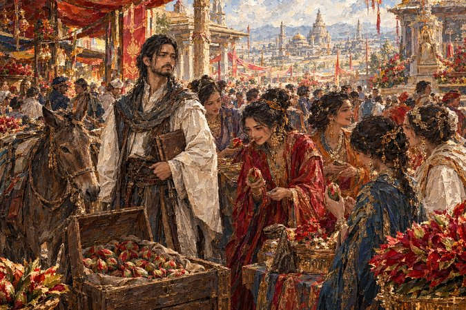
The trader who calls himself Somadatta sells the empire's newest custom one bulb at a time.
-
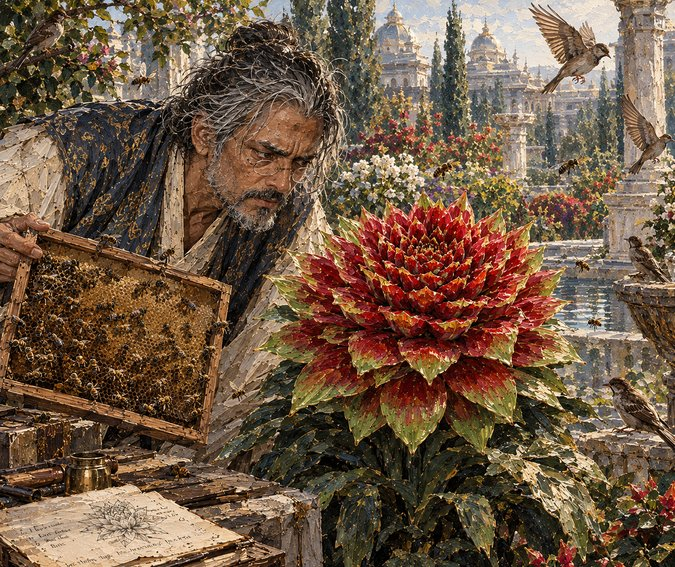
Three mornings, one frame of temple bees, and not a single insect willing to land.
-
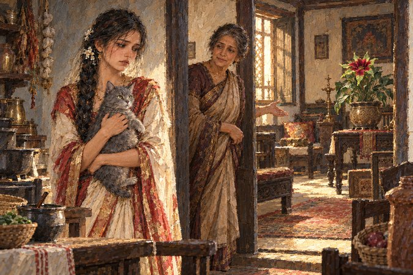
A vow-flower needs no room at all, and somehow there still isn't room for the cat.
-
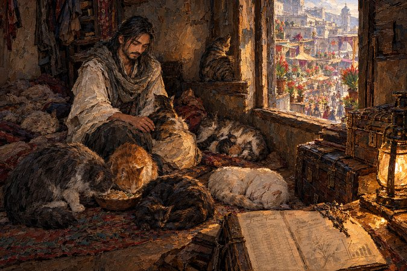
Above the seed-stall that is really a Cultivator field post, an Envoy keeps the one part of the case that isn't, strictly, the case.
-
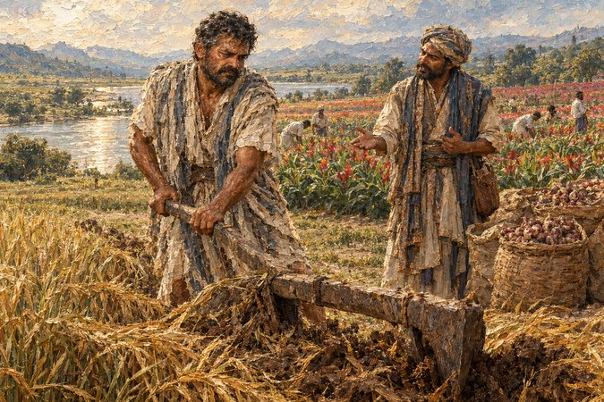
Govinda converts his own barley field rather than let a broker's crew do it for him.
-
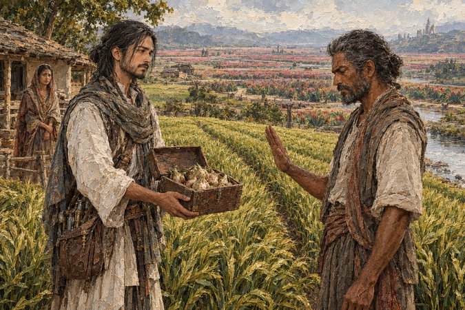
Offered the bulbs directly, Bhadraka refuses without raising his voice.
-
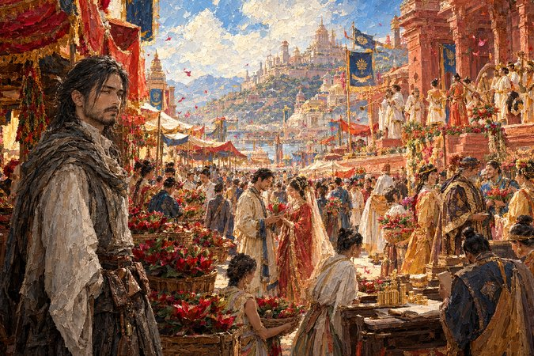
In the year everyone was rich, three couples buy a bulb inside the same hour.
-
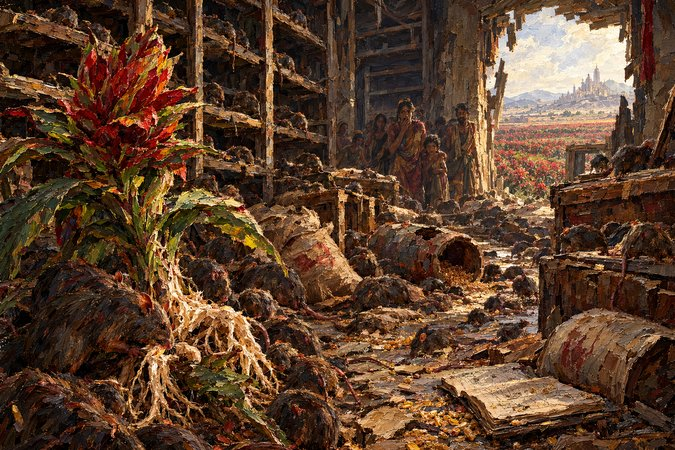
The Vow's own roots turn out to be adequate eating, for whatever is left in an empty granary.
-
Generations on, a bride carries an Anantavrata down the aisle, and no one remembers why.
Awaiting Release
Not yet available — this panel will link out once there is somewhere to read it.